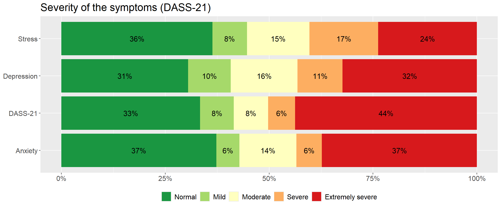
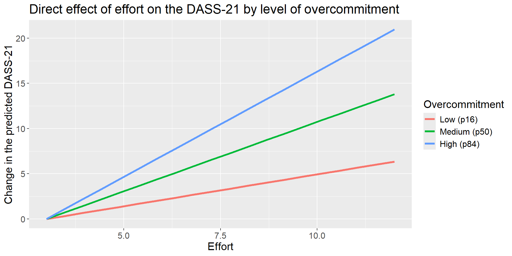

Mental Health of Bank Workers: psychometric validation and models of work-related suffering
Hugo Batista da Silva
Note
Projects 6.1 and 6.2 were made for the same client, a research group in work psychology of the Graduate Program in Psychology of the Federal University of Espírito Santo (UFES), but they use different databases and different analyses. This page is the first one; the second one, with administrative data of the Federal Highway Police, is Project 6.2.
About the project
This study was a research project of UFES (PIIC 2023/2024 call) carried out with the bank workers’ union of Espírito Santo (Sindibancários-ES). The banking sector has gone through deep changes in the last decades: digitalisation, sales targets, pressure for results and job insecurity. The union needed data about the mental health of its members, and the research group designed an online survey to find out how suffering is built among bank workers.
The survey received 784 answers. After keeping only the people who accepted the consent form, who are active bank workers and who work in Espírito Santo, 665 valid questionnaires remain. I was responsible for the statistical analysis: the validation of the scales, the descriptive analysis and the models that relate the work context to the mental health of the workers.
Theoretical framework
The questionnaire combines six instruments. Each one measures a construct, a theoretical concept that cannot be observed directly and is measured through a set of items:
Pressure of sales targets, moral conflict, loss of meaning
Risk specific to the sector
Work context
EACT (Mendes & Ferreira)
Working conditions, work organisation, socio-professional relations
Psychosocial risk
Work-related damage
EADRT (Mendes & Ferreira)
Physical, psychological and social damage
Second outcome
Workplace harassment
Negative acts block of the questionnaire
Frequent harassment (yes / no)
Psychosocial risk
The theoretical idea that guides the analysis is a chain: an adverse work context and an imbalance between the effort demanded and the reward received generate tension; overcommitment, a personal pattern of excessive dedication to work, amplifies this tension; and the result appears as symptoms of depression, anxiety and stress and as damage to physical, psychological and social health.
The dataset
The data are real, but they are protected by the Brazilian data protection law (LGPD). In the version published here, all sociodemographic and socio-professional characteristics were removed (age, sex, race, education, children, city, bank, position, length of service), as well as dates and free-text answers, and each person received a new random key. Only the items of the scales and the work and health variables used in the models remain.
The scores are calculated from the items, following the rules of each instrument:
DASS-21: sum of the 21 items (0 to 63); for each subscale the sum of its 7 items is multiplied by 2, as recommended by the authors, and classified with the cut-off points of Lovibond and Lovibond (1995). The overall classification uses the cut-off points on the total score defined by the research team.
ERI: sums of effort (3 items), reward (7 items) and overcommitment (6 items); the effort-reward ratio is \(ER = E / (R \times 3/7)\), where \(3/7\) corrects the different number of items. Values above 1 indicate more effort than reward.
EACT and EADRT: mean of the items of each factor. In the EACT, higher scores mean a worse context (from 1 to 5, critical above 2.3 and severe above 3.7).
dataset_aux <-rbindlist(list( dataset[, .N, by = .(classe = classe_dep)][, escala :=tr("Depression", "Depressão")], dataset[, .N, by = .(classe = classe_ans)][, escala :=tr("Anxiety", "Ansiedade")], dataset[, .N, by = .(classe = classe_est)][, escala :=tr("Stress", "Estresse")], dataset[, .N, by = .(classe = classe_dass21)][, escala :="DASS-21"]))dataset_aux[, pct := N /sum(N), by = escala]ggplot(dataset_aux, aes(x = escala, y = pct, fill = classe)) +geom_col(position =position_stack(reverse =TRUE)) +geom_text(aes(label =ifelse(pct >=0.04, scales::percent(pct, accuracy =1), "")),position =position_stack(vjust =0.5, reverse =TRUE), size =4.5) +scale_fill_brewer(palette ="RdYlGn", direction =-1) +scale_y_continuous(labels = scales::percent) +coord_flip() +theme(text =element_text(size =15), legend.position ="bottom") +labs(title =tr("Severity of the symptoms (DASS-21)", "Gravidade dos sintomas (DASS-21)"),x =NULL, y =NULL, fill =NULL)

The picture is alarming: 50% of the bank workers are in the severe or extremely severe range of the overall DASS-21 classification, and 14% have already been on sick leave for mental health reasons. The three dimensions are affected in a similar way: between 40% and 43% of the workers are in the severe or extremely severe range of depression, anxiety and stress.
Before relating these symptoms to the work context, it is necessary to verify that the scales really measure what they claim to measure.
Confirmatory factor analysis
Each scale was built with a theoretical structure: which items belong to which factor. The confirmatory factor analysis (CFA) tests whether the answers of these 665 bank workers reproduce this structure. Since the items are ordinal (Likert scales), the models are estimated with WLSMV (weighted least squares with mean and variance adjustment) on the polychoric correlations, and the fit is evaluated with the robust (scaled) versions of the indices, the appropriate ones for this estimator:
Index
Good fit
CFI and TLI
≥ 0.90 (acceptable), ≥ 0.95 (good)
RMSEA
≤ 0.08 (acceptable), ≤ 0.05 (good)
SRMR
≤ 0.08
Standardised loadings
≥ 0.60
Omega (ω) and alpha (α)
≥ 0.70
Average variance extracted (AVE)
≥ 0.50
The function below fits a model and gathers the fit indices and the reliability of each factor in one table:
ajusta_cfa <-function(modelo) {cfa(modelo, data = dataset, estimator ="WLSMV", ordered =TRUE)}resumo_cfa <-function(fit) { ajuste <-fitMeasures(fit, c("chisq.scaled", "df", "cfi.scaled", "tli.scaled", "rmsea.scaled", "srmr"))# reliability of the first-order factors on the latent-response scale (ordinal items):# ordinal alpha from the polychoric correlations, McDonald's omega and AVE from the standardised loadings cargas <-as.data.table(standardizedSolution(fit))[op =="=~"&!rhs %in%lavNames(fit, "lv")] policoricas <-lavInspect(fit, "sampstat")$cov alfa_ordinal <-function(v) { r <- policoricas[v, v]; k <-length(v); k / (k -1) * (1- k /sum(r)) } confiab <- cargas[, .(itens = .N,alfa =alfa_ordinal(rhs),omega =sum(est.std)^2/ (sum(est.std)^2+sum(1- est.std^2)),ave =mean(est.std^2),carga_min =min(est.std),carga_max =max(est.std)), by = .(fator = lhs)]list(ajuste =round(c(ajuste, "chisq/df"= ajuste[["chisq.scaled"]] / ajuste[["df"]]), 3),fatores = confiab,admissivel =lavInspect(fit, "post.check"))}
Mental health (DASS-21)
The DASS-21 is modelled with its three first-order factors and a second-order factor, general distress, as proposed by the tripartite model.
The structure of the DASS-21 is confirmed: all loadings are between 0.82 and 0.94, the three factors have omega above 0.95 and AVE above 0.77, and the robust CFI is 0.986 with RMSEA of 0.074. The chi-square test rejects the exact fit, which is expected with a sample of this size, and the other indices show an adequate model.
Work profile (ERI and BEST-8)
The original theoretical model has six first-order factors (BEST-8, effort, esteem, promotion, job security and overcommitment), with esteem, promotion and job security grouped in a second-order reward factor.
The second-order model produces an improper solution (a Heywood case): the loading of job security on reward is greater than 1, which implies a negative residual variance. The correlations between the first-order factors show why:
Job security is more strongly (and negatively) related to overcommitment (r = -0.73), effort (r = -0.77) and BEST-8 (r = -0.74) than to the other two dimensions of reward. In this population, the fear of losing the job behaves more like a part of the pressure of the work than like a reward. The model was therefore re-specified with correlated first-order factors, which gives an admissible solution.
The fit of this construct is the weakest of the study (robust RMSEA of 0.107), and the reward dimensions, with only two or three items each, are the weak point: promotion and job security have low reliability (ω close to 0.6) and AVE below 0.5. Esteem, BEST-8, effort and overcommitment have adequate to excellent reliability. These limitations are taken into account in the interpretation of the models.
Work context (EACT) and work-related damage (EADRT)
Both constructs are confirmed: the factors have excellent reliability (omega above 0.92) and AVE above 0.53, with robust CFI of 0.937 and 0.97. The RMSEA values are slightly above 0.08, a common result in long scales, and the SRMR stays within the limit. In the work organisation factor, three items have low loadings (OrgTrab9, OrgTrab6 and OrgTrab10, from about 0.3 to 0.5); they were kept to preserve the validated instrument, and the factor still has good reliability, but they are candidates for revision in future applications.
With the measures validated, the scores calculated before can be used in the models.
All risk factors go in the expected direction: overcommitment, effort, BEST-8 and the three dimensions of the work context are positively correlated with the DASS-21, while reward is negatively correlated. Overcommitment is the construct most correlated with the symptoms, and the DASS-21 is strongly correlated with psychological damage, the two outcomes of the study.
Linear regression for the DASS-21
The first model explains the total score of the DASS-21. The variables were selected among the risk factors of the theoretical framework, keeping those with a significant contribution and no multicollinearity. Harassment has missing answers, so the model uses the 546 bank workers who answered this question.
The model explains 57.8% of the variability of the DASS-21 (adjusted R²), all coefficients are significant and the VIF values are below 2, with no multicollinearity. Holding the other variables constant:
each point of overcommitment adds 1.46 points to the DASS-21;
each point of the socio-professional relations score adds 2.56 points. Since in the EACT a higher score means a worse context, worse relations at work are associated with more symptoms;
each point of job security removes 1.04 points, a protective factor;
suffering frequent harassment adds 6.8 points, the largest effect of the model;
each point of the BEST-8 adds 0.29 points.
Diagnostics
The assumptions of the model are checked: influential observations, normality and homoscedasticity of the residuals.
n <-nobs(fit_lm)k <-length(coef(fit_lm))cook <-cooks.distance(fit_lm)influentes <-which(cook >4/ n)par(mfrow =c(1, 3))plot(hatvalues(fit_lm), type ="h", xlab =tr("Observation", "Observação"), ylab =tr("Leverage", "Alavancagem"))abline(h =2* k / n, col ="red", lty =2)plot(cook, type ="h", xlab =tr("Observation", "Observação"), ylab =tr("Cook's distance", "Distância de Cook"))abline(h =4/ n, col ="red", lty =2)plot(fitted(fit_lm), rstandard(fit_lm), pch =20, xlab =tr("Fitted values", "Valores ajustados"),ylab =tr("Standardised residuals", "Resíduos padronizados"))abline(h =c(-2, 2), col ="red", lty =2)
teste p_valor
<char> <num>
1: Lilliefors (Kolmogorov-Smirnov) normality test 0.7653
2: Shapiro-Wilk normality test 0.5203
3: Anderson-Darling normality test 0.6283
4: Cramer-von Mises normality test 0.5852
bptest(fit_lm)
studentized Breusch-Pagan test
data: fit_lm
BP = 6.5305, df = 5, p-value = 0.258
The residuals show no evidence against normality, and the Breusch-Pagan test does not reject homoscedasticity. 36 observations have a Cook’s distance above \(4/n\). Instead of simply deleting them, the model is fitted again without them as a sensitivity analysis, to check whether the conclusions depend on these points:
fit_lm_sem <-update(fit_lm, data = dataset[!is.na(assedio)][-influentes])data.table(variavel =names(coef(fit_lm)), completo =coef(fit_lm), sem_influentes =coef(fit_lm_sem))
All coefficients keep their signs and similar magnitudes. The adjusted R² rises to 0.67 because the removed points are precisely the cases the model explains worst, but the conclusions about each factor do not depend on them, so the complete model is kept.
Ordinal regression for the DASS-21 classification
The DASS-21 is also used in practice through its classification (normal, mild, moderate, severe, extremely severe). An ordinal logistic regression (proportional odds model) estimates how each factor changes the chance of being in a more severe category. Here the socio-professional relations enter through the EACT classification.
The Brant test does not reject the proportional odds assumption, neither globally nor for any variable, so the model is adequate. The odds ratios tell the same story as the linear model:
each point of overcommitment increases by 24% the odds of being in a more severe category;
promotion and job security are protective: each point reduces the odds by 14% and 15%;
each point of the BEST-8 increases the odds by 5%;
bank workers with severe socio-professional relations have 2.58 times the odds of those with satisfactory relations.
Mediation and moderation
The regressions show which factors are associated with the symptoms; the theoretical framework also proposes how they act. Two models of the Hayes framework (PROCESS) were tested, estimated here with lavaan and confidence intervals by bootstrap (1,000 resamples) for the indirect effects.
Overcommitment as mediator (model 4)
Does the effort-reward imbalance increase symptoms partly through overcommitment?
modelo_4 <-"superdedicacao ~ a * razao_erdass21 ~ c * razao_er + b * superdedicacaoindireto := a * btotal := c + a * b"set.seed(2024)fit_m4 <-sem(modelo_4, data = dataset, se ="bootstrap", bootstrap =1000)efeitos_m4 <-as.data.table(parameterEstimates(fit_m4, boot.ci.type ="perc"))[label !="", .(label, est, ci.lower, ci.upper, pvalue)]efeitos_m4
label est ci.lower ci.upper pvalue
<char> <num> <num> <num> <num>
1: a 4.492533 4.063386 4.979373 0.000000e+00
2: c 7.626224 5.580213 9.646547 3.190781e-13
3: b 1.785085 1.529959 2.086356 0.000000e+00
4: indireto 8.019552 6.745036 9.560305 0.000000e+00
5: total 15.645776 14.002100 17.343593 0.000000e+00
The imbalance between effort and reward increases overcommitment (a = 4.49), and overcommitment increases the symptoms (b = 1.79). The indirect effect is 8.02, with a bootstrap interval that does not contain zero, and the direct effect remains significant: overcommitment partially mediates the effect of the imbalance, carrying about 51% of the total effect.
Overcommitment as moderator (model 5)
In model 5, effort acts on the symptoms through reward (mediation), and its direct effect may depend on the level of overcommitment (moderation).
e5 <-setNames(efeitos_m5$est, efeitos_m5$label)dataset_aux <-CJ(esforco =seq(min(dataset$esforco), max(dataset$esforco), length.out =20), nivel =1:3)dataset_aux[, superdedicacao := percentis[nivel]]dataset_aux[, dass_previsto := e5[["c1"]] * esforco + e5[["c2"]] * superdedicacao + e5[["c3"]] * esforco * superdedicacao]dataset_aux[, dass_previsto := dass_previsto - dass_previsto[1], by = nivel]dataset_aux[, nivel :=factor(nivel, 1:3, tr(c("Low (p16)", "Medium (p50)", "High (p84)"), c("Baixa (p16)", "Média (p50)", "Alta (p84)")))]ggplot(dataset_aux, aes(esforco, dass_previsto, colour = nivel)) +geom_line(linewidth =1.3) +theme(text =element_text(size =15)) +labs(title =tr("Direct effect of effort on the DASS-21 by level of overcommitment","Efeito direto do esforço sobre o DASS-21 por nível de superdedicação"),x =tr("Effort", "Esforço"), y =tr("Change in the predicted DASS-21", "Variação do DASS-21 previsto"),colour =tr("Overcommitment", "Superdedicação"))

Effort reduces the perceived reward (a = -0.68), and less reward means more symptoms (b = -1.01), an indirect effect of 0.69 per point of effort. The interaction between effort and overcommitment is significant: the direct effect of effort is 0.7 for bank workers with low overcommitment and grows to 2.33 for those with high overcommitment. The same effort hurts more those who dedicate themselves excessively to the work.
Psychological damage
The same factors also explain the second outcome of the study. In the model for psychological damage (EADRT), the DASS-21 enters as a predictor, together with overcommitment, harassment, socio-professional relations and psychiatric follow-up:
The model explains 69.4% of the psychological damage. The DASS-21 is by far the strongest predictor (a standardised coefficient of 0.5), followed by overcommitment and the socio-professional relations. Psychiatric follow-up appears with a positive coefficient: it does not cause damage, it marks the cases that are already more serious and in treatment.
How the analyses converge
Each analysis answers a different question, and together they point in the same direction:
The measures work. The confirmatory factor analysis validates the DASS-21, the work context and the work-related damage. The only fragile point is the reward of the ERI, where job security behaves as a part of the pressure of the work.
Overcommitment is the central factor. It is the construct most correlated with the symptoms, it has the strongest effect in the linear and ordinal regressions, it mediates the effect of the effort-reward imbalance and it amplifies the effect of effort.
The work context matters beyond the individual. Harassment, poor socio-professional relations and the pressure of sales targets (BEST-8) increase the symptoms in every model, and job security and promotion protect.
Symptoms and damage are two faces of the same suffering. The DASS-21 explains most of the psychological damage, which closes the chain proposed by the theoretical framework: an adverse work context, filtered by overcommitment, becomes symptoms and then damage to health.
The same instrument, the DASS-21, and the same type of question, what is associated with mental suffering at work, appear in Project 6.2, now with administrative data and two measurements over time.
#Cleaning the environmentrm(dataset_aux, matriz, fit_perfil_2ordem)invisible(gc())